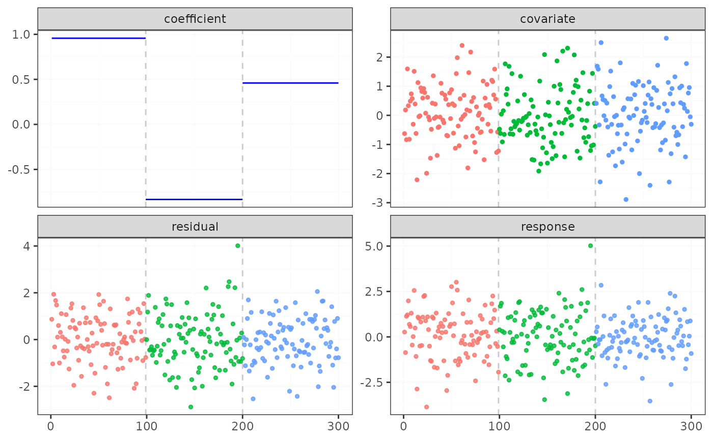

fastcpd: A package for finding change points in an efficient way
fastcpd.RdThe fastcpd package provides a function fastcpd to find change
points in a data set. The function is based on the paper "Sequential Gradient
Descent and Quasi-Newton’s Method for Change-Point Analysis" by
Xianyang Zhang and Trisha Dawn.
This S4 class stores the output from fastcpd. A fastcpd object consist
of several slots including the call to fastcpd, the data used, the
family of the model, the change points, the cost values, the residuals, the
estimated parameters and a boolean indicating whether the model was fitted
with only change points or with change points and parameters, which you can
select using @.
Usage
fastcpd(
formula = y ~ . - 1,
data,
beta = NULL,
segment_count = 10,
trim = 0.025,
momentum_coef = 0,
k = function(x) 0,
family = NULL,
epsilon = 1e-10,
min_prob = 10^10,
winsorise_minval = -20,
winsorise_maxval = 20,
p = NULL,
cost = negative_log_likelihood,
cost_gradient = cost_update_gradient,
cost_hessian = cost_update_hessian,
cp_only = TRUE
)
fastcpd(
formula = y ~ . - 1,
data,
beta = NULL,
segment_count = 10,
trim = 0.025,
momentum_coef = 0,
k = function(x) 0,
family = NULL,
epsilon = 1e-10,
min_prob = 10^10,
winsorise_minval = -20,
winsorise_maxval = 20,
p = NULL,
cost = negative_log_likelihood,
cost_gradient = cost_update_gradient,
cost_hessian = cost_update_hessian,
cp_only = TRUE
)Arguments
- formula
A symbolic description of the model to be fitted.
- data
A data frame containing the data to be segmented.
- beta
Initial cost value.
- segment_count
Number of segments for initial guess.
- trim
Trimming for the boundary change points.
- momentum_coef
Momentum coefficient to be applied to each update.
- k
Function on number of epochs in SGD.
- family
Family of the model. Can be "binomial", "poisson", "lasso" or "gaussian". If not provided, the user must specify the cost function and its gradient (and Hessian).
- epsilon
Epsilon to avoid numerical issues. Only used for binomial and poisson.
- min_prob
Minimum probability to avoid numerical issues. Only used for poisson.
- winsorise_minval
Minimum value to be winsorised. Only used for poisson.
- winsorise_maxval
Maximum value to be winsorised. Only used for poisson.
- p
Number of parameters to be estimated.
- cost
Cost function to be used. If not specified, the default is the negative log-likelihood for the corresponding family.
- cost_gradient
Gradient for custom cost function.
- cost_hessian
Hessian for custom cost function.
- cp_only
Whether to return only the change points or with the cost values for each segment.
Slots
callThe call to fastcpd.
dataThe data used.
familyThe family of the model.
cp_setThe change points.
cost_valuesThe cost values for each segment.
residualsThe residuals for each segment.
thetasThe estimated parameters for each segment.
cp_onlyA boolean indicating whether the model was fitted with only change points or with change points and parameters.
Examples
library(fastcpd)
# Binomial
x <- matrix(rnorm(1500, 0, 1), ncol = 5)
theta <- rbind(rnorm(5, 0, 1), rnorm(5, 2, 1))
y <- c(
rbinom(125, 1, 1 / (1 + exp(-x[1:125, ] %*% theta[1, ]))),
rbinom(175, 1, 1 / (1 + exp(-x[126:300, ] %*% theta[2, ])))
)
result <- fastcpd(
formula = y ~ . - 1,
data = data.frame(y = y, x = x),
family = "binomial",
cp_only = FALSE
)
#> Warning: fit_glm: fitted probabilities numerically 0 or 1 occurred
#> Warning: fit_glm: fitted probabilities numerically 0 or 1 occurred
plot(result)

summary(result)
#>
#> Call:
#> fastcpd(formula = y ~ . - 1, data = data.frame(y = y, x = x),
#> family = "binomial", cp_only = FALSE)
#>
#> Residuals:
#> Min 1Q Median 3Q Max
#> -15.61430 -1.37444 -1.00053 1.29261 38.53109
#>
#> Change points:
#> 20 127
#>